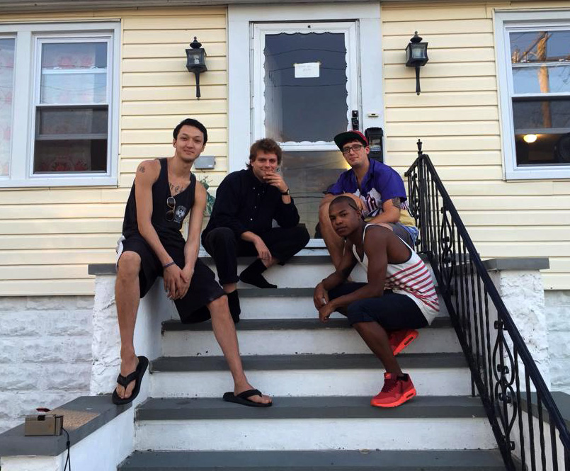

- - -
- - -
Life is pretty sweet for Mac Demarco
The singer has just moved, swapping an apartment for a full house. Switching out to the suburbs of New York, Mac is plotting a chilled out summer – sun, swimming, barbecues and plenty of music.
“I've moved into this house. I kinda live in a part of New York City where most people who go to New York City have never been,” he explains. “I moved into this house about a year ago and I live right on the Jamaica base – I see the JFK airport across from my house. I got a big backyard right on the water, got a couple grills. I can't swim in the bay water but the beach is a couple blocks away. I don't ever see anybody because I live pretty far away. I pretty much, like, don't live in the city but... I don't mind. It's pretty good." 
Sadly, though, Mac's peace and tranquillity has been disturbed by a phone call from Clash. The singer has just released new mini-album 'Another One', a series of loved up indie vignettes delivered in that trademark drawl.
“I always like weird things,” he muses. “I think mini-albums are a thing that existed in like the mid-70s for two years. Where, like, it was: yeah, yeah we've got this new marketing ploy! We're going to call it a mini-album, like a mini LP. They had this weird labelling. The guy that runs my record label is like a real vinyl nut, so he's like: yeah, let's try this! So this is an EP, really. But it's nice, it's faster than an album. It gets to come out quicker than if I had, like, the real run up for a full length or whatever.”
- - -
- - -
Arising from lengthy sessions in his home studio, 'Another One' feels extremely natural. Somewhere between an EP and a full album, there's a coherency to the project which is utterly unhurried.
“It sits as a whole,” he says. “It's definitely a thing of its own. I wrote it all in a week and a half and then recorded it like a week afterwards. It feels like a thing on its own but at the same time it is only seven songs and an instrumental. But I did feel like writing some songs, so I wrote some love songs and made a little summer treat for everybody.”
The material, he explains, is partly rooted in his own circumstances but also reflects a desire to write something universal. “In a way, it is autobiographical but at the same time I think the last album, 'Salad Days', that album was really like, kind of personal. I felt, not weird, but I did that and this time around I was like, I can write personal songs for me but they don't necessarily have to have like a cement story behind them. Especially with love songs, too, it's like... these things can mean a specific thing to me but to everybody else.”
“I think people should be able to come along and have it mean something to them,” he explains. “It's talking about all different kinds of facets of being in love, being out of love, wanting love, not wanting love. So I think that it's not so important what they mean to me, as opposed to being there for other people to have and to enjoy, hopefully and maybe to reflect on, or whatever.”
Eager to move forward, Mac DeMarco is already thinking about constructing some fresh material. A hazy schedule this summer has afforded the Captured Tracks signing plenty of time to muse about his next step, and – with the raw materials at his disposal – new songs could arrive sooner, rather than later.
“I'm definitely farting around already, so we'll see what we can do,” he laughs. “I don't know. It's funny for me because the new songs are actually starting to come out now. I feel like people are like: here's a new song! I don't have that feeling where it's like: fuck, I gotta make something.s”
“Even though we recorded these songs a couple of months ago, because they're coming out now it's like a rejuvenated feeling of, ah I just did something! I'm making music videos and stuff for 'em. So I'm cool in that sense, but I still want to try something because I'm home, surrounded by keyboards and stuff. So I'm messing around a little bit, so we'll see what I can come up with, if anything.”
One of the benefits of having his own space is that Mac can play the drums whenever he wants – and as loud as he wants. “I mean, I like to play the drums,” he says excitedly. “You can't play drums in an apartment, it doesn't work. But now, now I play 'em nice and loud – everyday! Feels great.”
“It's a stress living in an apartment trying to make music,” he says. “You're worried about playing too loud when you're recording.It puts a dampener on it. But now it's OK. Making heavy metal records no problem now.”
The Mac DeMarco death metal record has a certain ring to it, I suggest.
“That's not a bad idea!” he exclaims. “Ooh, that'd be fun!”
While new material night well be on the agenda, Mac isn't about to force himself into a situation he isn't comfortable with. “That's the thing,” sighs. “I don't want to push it. When the time is right, when I'm having fun doing it, that's the time when I can write stuff that I'm happy to share with people.”
“It's going to be a relaxed, hot summer down by the beach in New York so maybe the vibe will be right. I'll feel like sitting down at the piano and maybe something good will come up. You never know! If it doesn't, I don't feel pressured to make anything right now. But if it does... hey, can't complain!”
So that's where we leave him: long summer days on the fringes of New York, relaxing and making music with a couple of friends. As we say, life is pretty sweet for Mac DeMarco.